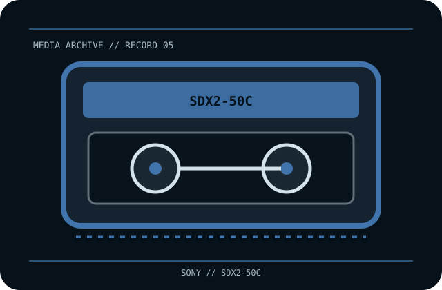

[ REMOVABLE MEDIA // MAGNETIC TAPE ]
Sony AIT-2 Data Cartridge (SDX2-50C)
Advanced Intelligent Tape Generation 2 (AIT-2), 8 mm Advanced Metal Evaporated (AME) magnetic cartridge with Memory-in-Cassette (MIC). This record identifies the media only; drive, host interface, firmware, software and any enclosure are separate.

EXACT SKU: Sony SDX2-50C. The record distinguishes nominal uncompressed capacity from any compressed estimate and documents generation-specific host compatibility.
Format generation, capacity and compatible drives
| Manufacturer / exact SKU | Sony SDX2-50C |
|---|---|
| Format / generation | Advanced Intelligent Tape Generation 2 (AIT-2), 8 mm Advanced Metal Evaporated (AME) magnetic cartridge with Memory-in-Cassette (MIC). |
| Native capacity | 50 GB native (uncompressed). |
| Compressed capacity | Up to 130 GB at the vendor’s nominal 2.6:1 compression ratio; actual capacity is data-dependent. |
| Compatible drive generations | AIT-2 drives qualified for SDX2-50C media. Some later AIT drives may support older-generation cartridges, but read/write mode is model-specific; consult the exact Sony drive manual and firmware list before use. |
| Interface and scope | The cartridge/disc has no direct host-computer interface. The compatible drive supplies its own SAS, Fibre Channel, SCSI, USB or other host connection; check the exact drive specification and driver/software chain. |
| Compatibility caveat | AIT is not interchangeable with 8 mm video/DAT formats based on shell appearance. 130 GB is compressed estimate, not native capacity; MIC does not guarantee drive or backup-software interoperability. |
Tape handling and preservation
Store in the protective case, clean and dry, away from dust, smoke, heat, direct sun and magnetic fields. Handle by the shell and avoid the exposed tape path/contacts; acclimate before use and follow drive-specific cleaning and environment instructions. Preserve checksums and make separate verified copies.
- Document the exact printed model, serial/batch or date code, write-protect/WORM status and source of the medium.
- For valuable data, keep at least two independently verified copies, record checksums, test restoration and plan migration before compatible hardware becomes unavailable.
Model-specific preservation and compatibility notes
Preservation note: magnetic tape is a format-dependent, obsolescence-prone medium. Keep a verified reader path and independent copies.
AIT is not interchangeable with 8 mm video/DAT formats based on shell appearance. 130 GB is compressed estimate, not native capacity; MIC does not guarantee drive or backup-software interoperability. Never infer interoperability from a similar cartridge shell, connector, brand or family name; confirm drive-generation support in the exact manufacturer's manual.
Manufacturer and archival references
- Sony Support — SDX2-50CManufacturer support record for the exact AIT-2 media SKU.
- Sony AIT media line-up (archival manufacturer leaflet copy)Generation, product codes and native/compressed capacity table.
- Sony Professional — AIT capacity and media overviewSony-hosted legacy AIT format/product reference.
Capacity, compatibility and handling are specific to this model and its supported drive generation. For legacy equipment, preserve the manual and test an end-to-end read before relying on the cartridge for migration.